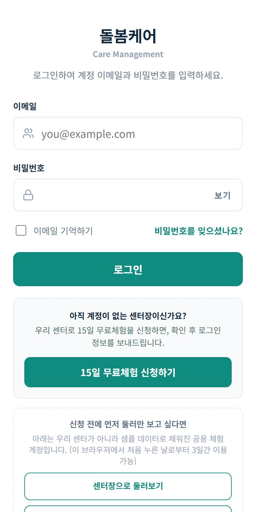
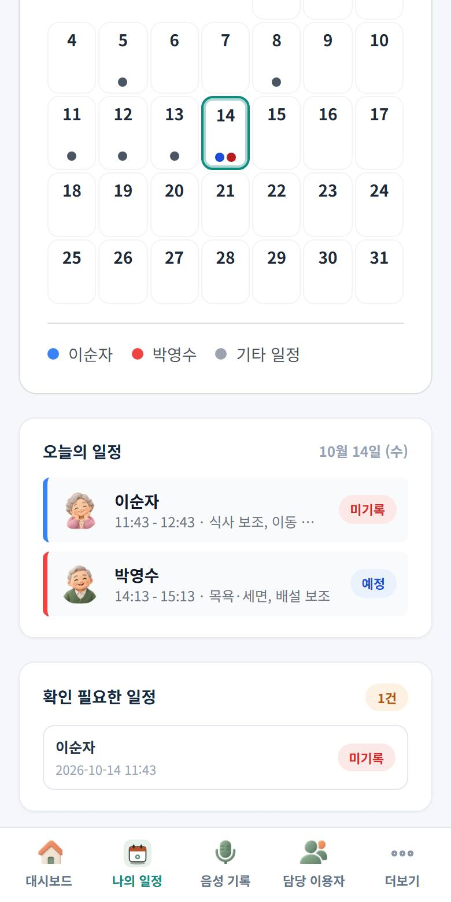
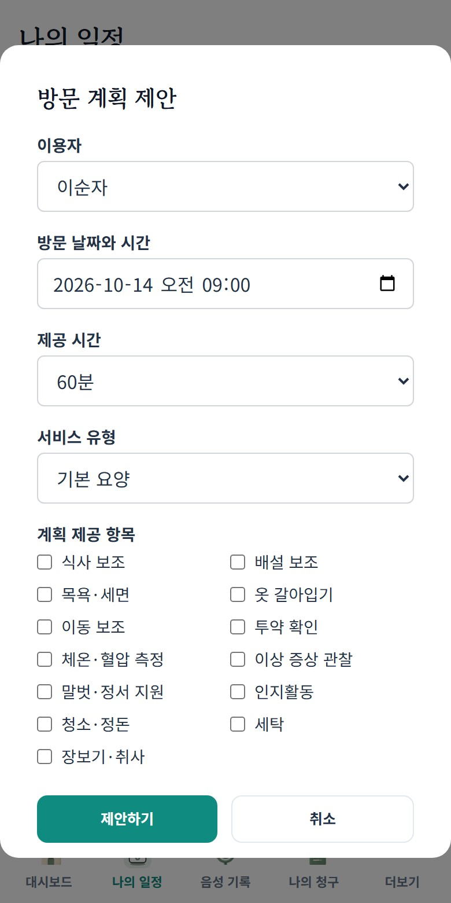
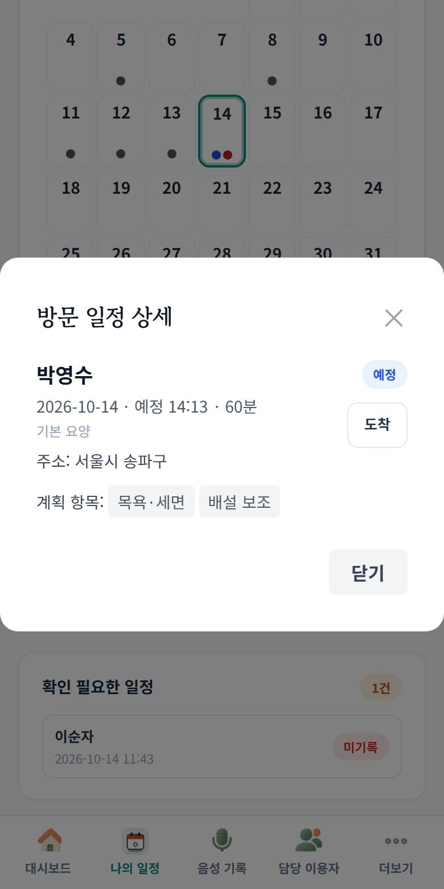
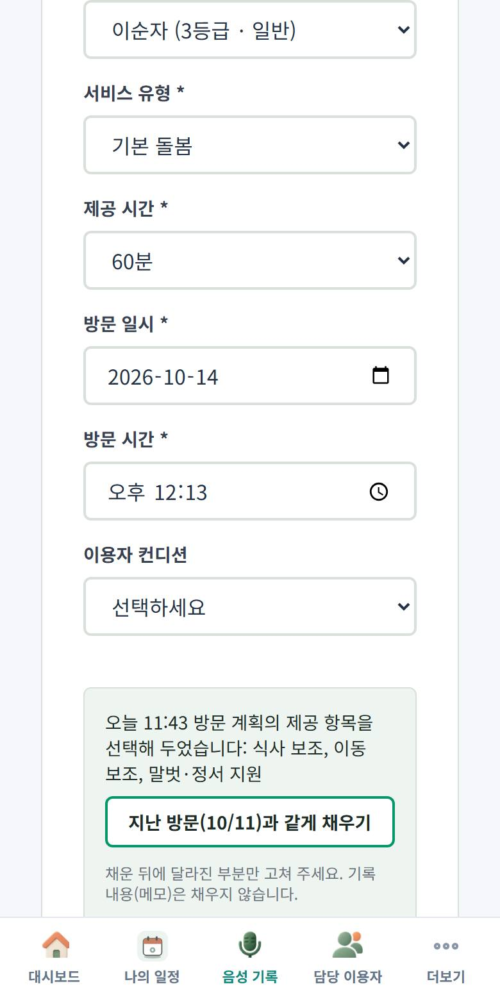
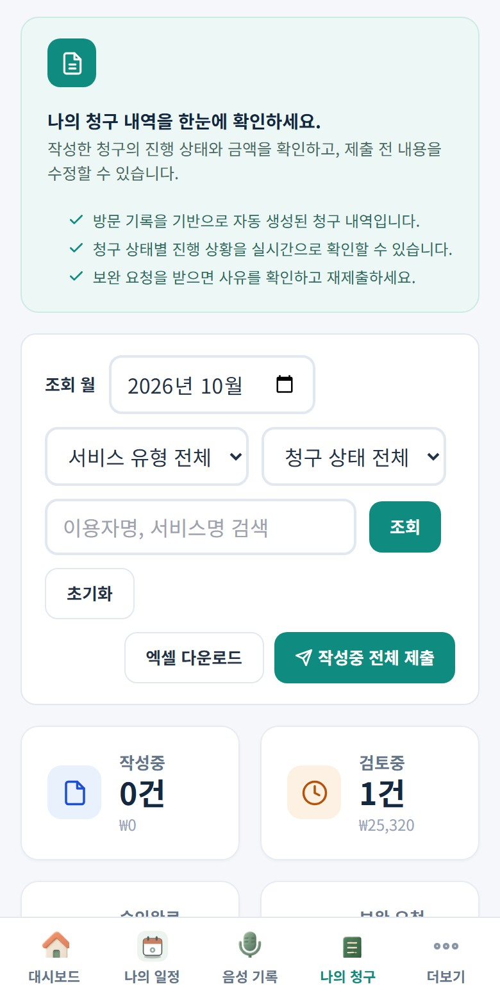
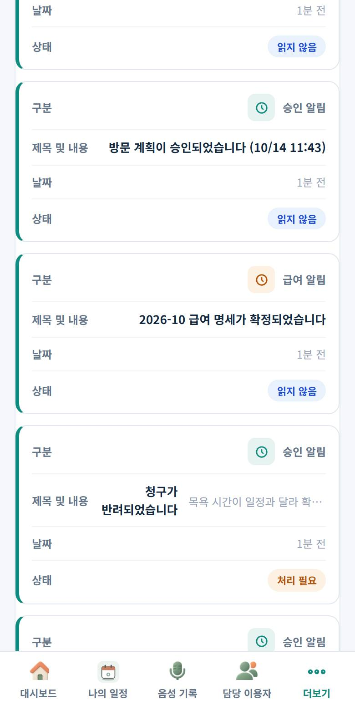
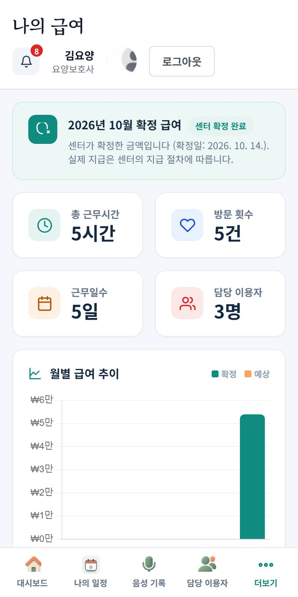

처음 쓰시는 분은 아래 8단계를 위에서부터 순서대로 따라 하세요.
방문 때마다 반복하는 것은 4~6단계입니다. 6단계 "제출"을 눌러야 센터장에게 승인 요청이 갑니다.
1
로그인하고 휴대폰 바탕화면에 추가하기
센터에서 받은 이메일과 비밀번호로 로그인합니다. 비밀번호를 모르면 로그인 화면의 비밀번호를 잊으셨나요?를 누르거나 센터장에게 재설정을 요청하세요.
- 안드로이드(크롬): 오른쪽 위 ⋮ → 홈 화면에 추가
- 아이폰(사파리): 아래 공유 버튼 → 홈 화면에 추가
센터장은 직원 관리에서 요양보호사 계정을 만들고, 이용자의 담당 요양보호사로 지정합니다. 지정되어야 내 이용자 목록에 보입니다.

로그인 화면
2
오늘 일정 확인하기
아래 메뉴의 나의 일정을 누르면 달력과 오늘의 일정이 나옵니다. 방문 시간, 이용자, 해야 할 서비스가 보입니다.
- 달력의 색 점은 이용자별 방문입니다. 날짜를 누르면 그날 일정이 달력 아래에 시간순 목록으로 나옵니다. 하루에 방문이 4건 이상이면 칸에 "N건"으로 표시됩니다.
- 방문 날짜·시간을 바꿔야 하면 예정 일정의 일정 변경 요청을 눌러 새 시간과 사유를 적습니다. 센터장이 승인하기 전까지는 기존 일정으로 방문합니다. 이미 도착을 누른 방문은 변경 요청을 할 수 없습니다.
- 상태가 예정이면 아직 방문 전, 미기록이면 시간이 지났는데 기록이 없다는 뜻입니다.

나의 일정
3
방문 계획이 없으면 "방문 계획 제안" 하기
+ 방문 계획 제안을 누르고 이용자, 날짜·시간, 제공 시간, 해야 할 서비스를 고른 뒤 제안하기를 누릅니다.
- 센터장이 승인하면 "오늘의 일정"에 확정으로 들어옵니다. 승인 전에는 승인 대기로 보입니다.
- 센터에서 이미 일정을 넣어 준 경우에는 이 단계를 건너뜁니다.
센터장 화면의 방문계획 승인에 "승인 대기"로 올라옵니다. 센터장이 승인하거나 사유를 적어 반려합니다.

방문 계획 제안
4
이용자 집에 도착하면 "도착" 누르기
오늘의 일정에서 이용자를 누르면 방문 일정 상세 창이 열립니다. 도착하면 도착, 서비스가 끝나고 나갈 때 퇴실을 누릅니다.
- 두 버튼은 실제로 도착하고 나갈 때 한 번씩 누르세요. 시각이 공단 점검 자료가 됩니다.
- 도착을 누른 뒤에는 창을 닫았다가 다시 열면 퇴실 버튼이 나옵니다.
센터장 대시보드의 오늘의 방문 서비스와 요양보호사별 현황(오늘 방문 도착/예정)에 바로 반영됩니다.

도착 버튼
5
음성 기록 쓰기
아래 메뉴의 음성 기록에서 이용자를 고르면 오늘 계획된 서비스가 미리 체크됩니다. 확인만 하고 달라진 부분을 고치세요.
- 지난 방문과 같게 채우기를 누르면 지난번 컨디션·변화상태가 채워집니다.
- 기록 내용에 한 일과 이용자 상태를 말하거나 적습니다. 낱말을 보고 "+ 목욕·세면" 같은 항목이 제안되면 눌러 추가하세요.
- 체크한 서비스는 직접 확인하고 내용 저장을 누릅니다.
센터장의 방문 기록 현황에 내 이름과 내용이 보입니다. 아직 "작성중" 상태입니다.

음성 기록
6
꼭 하세요: "나의 청구"에서 제출하기
나의 청구를 열면 방금 쓴 기록이 작성중으로 있습니다. 작성중 전체 제출을 누르면 검토중으로 바뀌고 센터장에게 승인 요청이 갑니다.
- 제출하지 않으면 센터장이 승인할 수 없고, 급여에도 들어가지 않습니다.
- 금액은 이용자 등급과 서비스 시간으로 자동 계산됩니다.
센터장에게 알림이 가고 대시보드 청구 승인 대기에 올라옵니다. 센터장이 청구 관리에서 승인하면 방문 기록 현황도 "승인"으로 바뀝니다.

나의 청구
7
반려되면 사유 보고 고쳐서 다시 제출하기
센터장이 반려하면 알림에 "청구가 반려되었습니다: 사유"가 옵니다. 나의 청구에서 해당 건을 열어 상세·수정으로 고친 뒤 다시 제출하세요.
- 상태가 보완 요청인 건이 고칠 건입니다.
- 이용자 정보가 틀렸다면 이용자 목록에서 변경 요청을 보내면 센터장이 승인해 바꿉니다.

반려 알림
8
월말에 "나의 급여"에서 확정 급여 확인하기
센터장이 달마다 급여를 확정하면 나의 급여에 확정 금액과 공제 내역(소득세·연금·건강·고용)이 나옵니다.
- "센터 확정 완료"가 보이면 확정된 금액입니다. 실제 지급은 센터의 지급 절차에 따릅니다.
- 승인된 청구만 급여에 들어갑니다. 제출·승인이 늦으면 다음 달로 넘어갈 수 있습니다.
센터장은 급여 확정 화면에서 요양보호사별 금액을 보고 한 번에 확정합니다.

나의 급여
자주 하는 실수 3가지
| 화면에 이렇게 보이면 | 뜻 | 이렇게 하세요 |
|---|---|---|
| 계획 외 | 승인된 방문 계획 없이 기록을 저장했습니다. | 3단계로 계획을 먼저 제안·승인받은 뒤 기록하세요. 이미 저장했다면 센터장에게 알리세요. |
| 도착 미기록, 제공 시간 초과 | 도착·퇴실을 누르지 않았거나, 머문 시간보다 길게 기록했습니다. | 방문할 때 도착·퇴실을 눌러 주세요. 시간이 실제와 다르면 센터장에게 말씀하세요. |
| 작성중에서 안 바뀜 | 제출을 하지 않았습니다. | 나의 청구에서 작성중 전체 제출을 누르세요. |
화면에 나오는 말
- 작성중
- 기록은 했지만 아직 제출하지 않은 상태
- 검토중
- 제출해서 센터장이 확인하는 중
- 승인완료
- 센터장이 승인함. 급여에 들어갑니다
- 보완 요청
- 센터장이 반려함. 사유를 보고 고쳐서 다시 제출
- 방문 계획
- 앞으로 방문할 일정. 센터장 승인 후 확정
돌봄케어 요양보호사 사용 순서
seniorcareinfo.kr · 센터에서 받은 이메일과 비밀번호로 로그인
- 로그인하고 휴대폰 바탕화면에 추가
- 나의 일정에서 오늘 일정 확인
- 계획이 없으면 방문 계획 제안 → 센터장 승인
- 이용자 집 도착 누르기 → 서비스 → 퇴실 누르기
- 음성 기록: 이용자 선택 → 체크된 서비스 확인 → 내용 쓰기 → 저장
- 나의 청구 → 작성중 전체 제출 (안 누르면 센터장에게 안 보입니다)
- 반려 알림이 오면 사유 보고 고쳐서 다시 제출
- 월말 나의 급여에서 확정 급여 확인
기억하세요 · 방문마다 4~6번을 반복합니다 · "계획 외"는 계획 없이 기록했다는 표시 · "작성중"에서 안 바뀌면 제출을 안 한 것